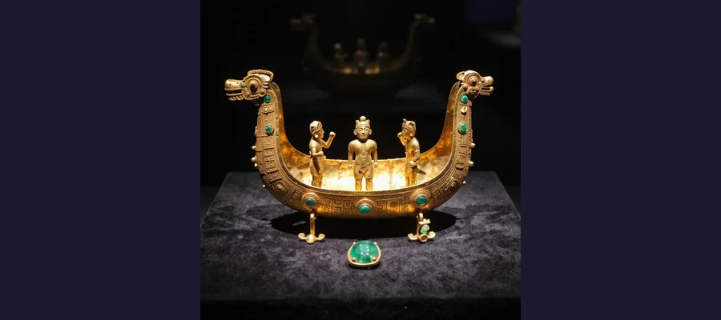
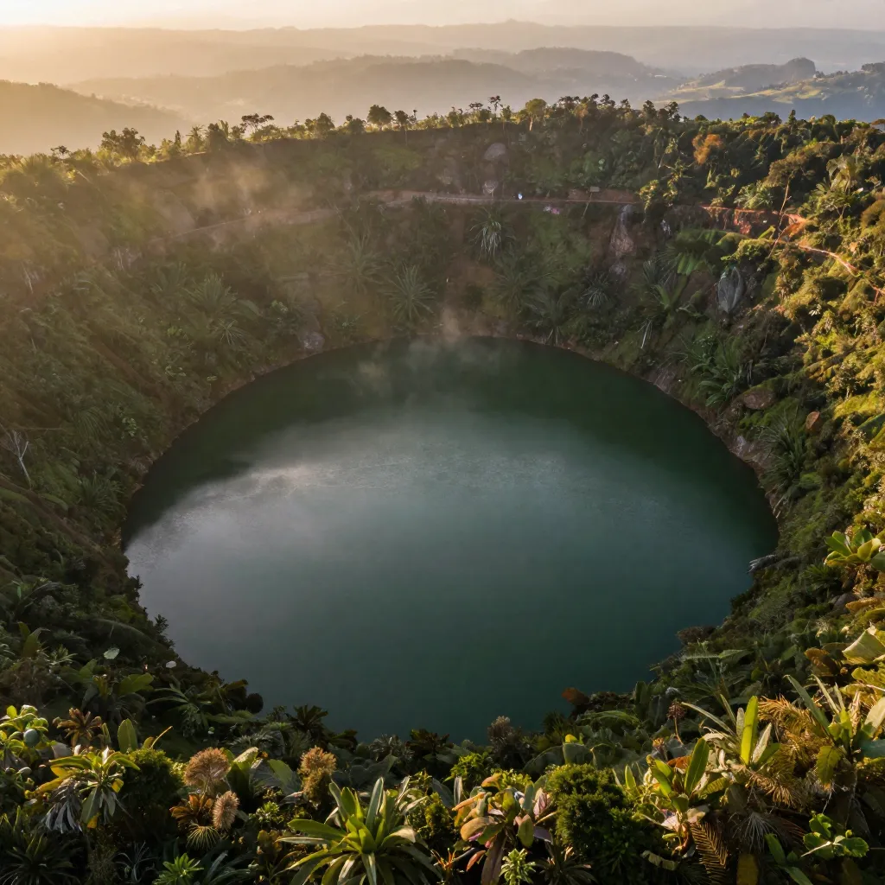

El Dorado: The Legendary City of Gold That Drove Conquistadors Mad

The Muisca ceremony at Lake Guatavita — a king covered in gold dust offered treasures to the sacred lake, spawning the legend of El Dorado.
Sometime in the late 15th century, on a circular lake high in the Colombian Andes, a naked man stepped onto a raft adorned with incense burners and golden ornaments. His attendants smeared his entire body with a sticky resin, then blew fine gold dust over every inch of his skin until he gleamed like a living statue. Piles of gold emeralds and precious objects lay stacked at his feet as the raft was pushed off from the shore into the still, dark water of Lake Guatavita. When the raft reached the center of the lake, the crowd gathered on the banks fell silent. The golden man raised his arms and cast the treasure into the water, a glittering cascade sinking into the depths as an offering to the gods. Then he dove in himself, washing the gold dust from his body, and the crowd erupted in celebration.
This was the El Dorado ceremony of the Muisca people, and the golden man was their newly crowned king, the Zipa, ruler of the southern Muisca confederation. The ritual was real. It was witnessed, described in surviving chronicles, and confirmed by archaeological evidence. But what the Spanish conquistadors made of it was something else entirely. In their hands, El Dorado — the Golden Man — became El Dorado, the Golden City. Then the Golden Empire. And finally, the greatest treasure hunt in the history of the Western Hemisphere, a quest that consumed lives, fortunes, and entire expeditions across three centuries of obsessive, largely fruitless searching.
The true story of El Dorado is both more interesting and more human than the fantasy. It is a story about a real civilization with extraordinary goldworking skills, a ceremony that spun out of control through cultural misunderstanding, and the lethal power of greed in an age of conquest.
The Muisca: The Real Gold Masters of the Andes
Before the Spanish arrived, the Muisca were one of the most advanced civilizations in the Americas. They inhabited the high plateau of the Eastern Ranges of the Colombian Andes, a fertile region of valleys, lakes, and cloud forests centered on what is now Bogota. The Muisca were not a single unified state but a network of chiefdoms, the most powerful being the Zipa (southern confederation, based near present-day Bogota) and the Zaque (northern confederation, based near Tunja).
What made the Muisca remarkable was their goldworking. Using techniques including lost-wax casting, depletion gilding, and hammering, they produced artifacts of astonishing beauty and technical sophistication. They did not have iron tools. They did not use the wheel. But they worked gold with a precision that rivaled anything produced in Europe at the time. Their gold was not pure 24-karat bullion but an alloy of gold, silver, and copper called tumbaga, which could be treated with acids to remove the copper from the surface, leaving a thin layer of pure gold that gave the appearance of solid metal.
Muisca society was sophisticated in other ways as well. They practiced intensive agriculture on terraced hillsides, maintained extensive trade networks stretching from the Caribbean coast to the Amazon basin, and had a complex religious system centered on the worship of natural features — lakes, mountains, and caves. Their political organization, with its system of chiefdoms, tribute, and ceremonial investiture rituals, was among the most complex in pre-Columbian South America.
- The Muisca inhabited the Cundiboyacense high plateau in the Eastern Ranges of the Colombian Andes at elevations of 2,500-3,000 meters
- They were one of the four advanced civilizations of the Americas alongside the Aztec, Maya, and Inca
- Muisca gold artifacts used tumbaga alloy (gold, silver, copper) treated with surface gilding techniques
- The Muisca had no written language but maintained detailed oral traditions and accounting using knotted cords
- Their population at the time of Spanish contact is estimated at 500,000 to 1,000,000
🏠 A Civilization Without Monuments
Unlike the Egyptian pyramids, the Terracotta Army, or Machu Picchu, the Muisca built no massive stone structures. Their architecture was made of wood, bamboo, and thatch, materials that decomposed in the tropical climate. This absence of ruins contributed to their relative obscurity compared to other pre-Columbian civilizations, despite their sophistication in metalworking, agriculture, and political organization. The Gold Museum in Bogota contains over 55,000 pre-Columbian gold pieces, most of Muisca origin, representing one of the greatest collections of ancient metalwork on Earth.

The Balsa Muisca, a golden raft depicting the El Dorado ceremony, discovered in 1969 in a cave near Bogota. Now in Colombia's Gold Museum.
The Ceremony at Lake Guatavita
Lake Guatavita is a small, almost perfectly circular lake located about 57 kilometers northeast of Bogota, nestled in the mountains at an elevation of 3,000 meters (9,800 feet). It is roughly 700 meters in diameter and reaches a depth of approximately 125 meters (410 feet). The lake sits in a natural depression whose origins have been debated — theories include a meteorite impact, a collapsed limestone cavern, or a volcanic feature, though no consensus has been reached.
For the Muisca, Lake Guatavita was a sacred site of the highest order, associated with the worship of a female deity connected to water and fertility. The investiture ceremony of a new Zipa involved the ritual at the lake, where the new chief was covered in gold dust, placed on a decorated raft, and rowed to the center of the lake. There, he would cast gold ornaments, emeralds, and other treasures into the water as offerings before diving in to wash the gold from his body. The Spanish chronicles describe lavish, large-scale ceremonies attended by thousands.
A 2023 archaeological study published in Latin American Antiquity by Cambridge University Press, however, suggests the reality was more modest. The survey of material culture around the lake found evidence of small-scale ritual offerings rather than massive ceremonies, raising the possibility that the Spanish chronicles exaggerated the scale of the events to justify further conquest and to fuel interest in funding expeditions.
From Golden Man to Golden City: How the Myth Exploded
The transformation of El Dorado from a person into a city is one of the most consequential misunderstandings in history. When Spanish conquistadors first heard descriptions of the golden man ceremony from indigenous informants in the 1530s, they interpreted it through the lens of their own obsessions. The Spanish had already conquered the Aztec and Inca empires, seizing vast quantities of gold. The idea that somewhere in the unexplored interior of South America there existed a civilization even wealthier than those was irresistible.
The key figures in this transformation were three conquistadors who converged on Muisca territory independently in 1537: Gonzalo Jimenez de Quesada, who marched inland from the Caribbean coast with 800 men; Sebastian de Belalcazar, who marched north from Quito; and Nikolaus Federmann, a German explorer who marched west from Venezuela. All three were searching for gold. What they found was the Muisca — a wealthy civilization with abundant gold ornaments but no cities made of gold, no streets paved with the stuff, no temples sheathed in it.
The Spanish took what gold they could find, melted down the artifacts, and shipped it back to Spain. But the stories of the golden man ceremony persisted, growing in the telling. If the Muisca chief was rich enough to coat himself in gold and throw treasures into a lake, reasoned the conquistadors, then somewhere deeper in the jungle there must be the source of all that gold — a city, an empire, a civilization of unimaginable wealth. The search for this phantom city would consume European explorers for the next three hundred years.
🌊 Draining the Sacred Lake
The most dramatic attempt to recover the gold of El Dorado came in 1912, when an English engineer named Hartley Knowles obtained a contract from the Colombian government to drain Lake Guatavita. Using dynamite and massive pumps, his team lowered the water level by several meters and recovered a small quantity of gold artifacts, emeralds, and precious stones from the exposed lake bed. But the mud at the bottom of the lake turned into a treacherous quagmire that swallowed equipment and made further excavation impossible. The lake subsequently refilled. Earlier attempts in the 1580s by Hernan Perez de Quesada had also tried cutting a notch in the crater rim to drain the water, lowering the level by about 20 meters but recovering only modest treasures. The vast majority of whatever was thrown into Lake Guatavita remains there to this day, at the bottom of 125 meters of water and silt.

Lake Guatavita, the sacred crater lake in the Colombian Andes where Muisca kings performed the golden ceremony that spawned the El Dorado legend.
Into the Amazon: Expeditions That Vanished
Having seized the Muisca gold and found no golden city, the Spanish refused to believe it did not exist. Instead, they concluded that El Dorado must lie somewhere deeper in the continent, beyond the Andes, in the vast uncharted wilderness of the Amazon basin. What followed was a series of increasingly desperate and disastrous expeditions that ranks among the most tragic chapters in the history of exploration.
Philip von Hutten, a German conquistador, led an expedition into the interior of Venezuela in 1541 searching for a golden city rumored to be ruled by a chief called Manoa. His party spent years wandering through jungle, fighting indigenous groups, and finding nothing. Von Hutten was eventually killed by a rival Spanish expedition. Pedro de Ursua led another search in 1560, descending the Amazon River, only to be murdered by his own lieutenant, the infamous Lope de Aguirre, who then went on a killing spree that inspired Werner Herzog's film Aguirre, the Wrath of God.
The most persistent searcher was Sir Walter Raleigh, who made two expeditions to South America (1595 and 1617) specifically to find El Dorado, which he believed was located on the shores of a lake called Parime. Raleigh explored the Orinoco River, found nothing, and returned to England where he was executed in 1618 partly for failing to deliver the gold he had promised.
- Gonzalo Jimenez de Quesada (1537) conquered the Muisca but found no golden city, only real gold artifacts
- Philip von Hutten (1541) spent years searching the Venezuelan interior, was killed by rivals
- Pedro de Ursua and Lope de Aguirre (1560) searched the Amazon; de Ursua was murdered by his own men
- Sir Walter Raleigh (1595, 1617) explored the Orinoco twice, found no gold, was executed on return
- Percy Fawcett (1925) searched the Brazilian Amazon for the "City of Z" and vanished with his entire party
Percy Fawcett and the City of Z
The El Dorado legend also spawned a parallel tradition of exploration in the Brazilian Amazon. In 1925, the British surveyor and explorer Percy Fawcett disappeared in the Mato Grosso region of Brazil while searching for a lost city he called "Z". Fawcett had been inspired by a document known as Manuscript 512, housed in the National Library of Brazil, which described the ruins of a vast stone city discovered by a Portuguese bandeirante in 1753. Fawcett believed this city was the remnants of an advanced civilization predating the known cultures of South America.
Fawcett, his son Jack, and Jack's friend Raleigh Rimell vanished without a trace. Over the following decades, an estimated 100 would-be rescuers died trying to find them. The fate of Fawcett's party remains unknown, though most researchers believe they were killed by indigenous people. Recent archaeological work in the Amazon has indeed uncovered evidence of large pre-Columbian settlements, including geoglyphs, causeways, and raised agricultural fields suggesting populations in the tens of thousands, though nothing matching the golden city of legend.
🏠 The Balsa Muisca: The Golden Raft That Proved the Legend
In 1969, two campesinos digging in a cave near the village of Pasca, south of Bogota, discovered a small gold figurine that would become one of Colombia's most treasured national artifacts. The Muisca Raft (Balsa Muisca) is a votive piece measuring just 19.5 by 10.2 centimeters (about 7.7 by 4 inches), depicting exactly the ceremony described in the chronicles: a central figure standing tall on a raft, surrounded by attendants, wearing elaborate headdresses and ornaments. Scientific dating places its creation between 1295 and 1410 CE, centuries before the Spanish arrived. The raft, now the centerpiece of the Gold Museum (Museo del Oro) in Bogota, is the single most compelling physical evidence that the El Dorado ceremony was real.
👑 The Gold That Was Never Lost
The irony of El Dorado is that the gold was never lost. It was right where the Muisca left it: in Lake Guatavita, in the artifacts buried with the dead, in the temples and shrines scattered across the Colombian highlands. The Spanish found enormous quantities of it. They melted down masterpieces of pre-Columbian metalwork into ingots and shipped them across the Atlantic to finance European wars and palaces. What they failed to find was the fantasy — a city where gold was as common as stone, an empire richer than imagination could contain. That city never existed. What did exist was a sophisticated civilization of farmers, traders, and artisans who worked gold with extraordinary skill and venerated it as sacred. The Muisca did not build a golden city. They built something more enduring: a legend so powerful that it has outlasted every expedition, every disappointed conquistador, and every failed drainage attempt. The gold of El Dorado is not buried in the Amazon. It is in Bogota, in display cases, where 55,000 pieces of it remind visitors that the real treasure was the civilization that created it.
Frequently Asked Questions
Was El Dorado a real place?
El Dorado was originally a person, not a place. The name means "the Golden One" in Spanish and referred to the Muisca Zipa (king) who was covered in gold dust during an investiture ceremony at Lake Guatavita in the Colombian Andes. Over time, Spanish conquistadors transformed the story of a golden man into a legend about a golden city, and then an entire golden empire. No city made of gold has ever been found.
Has anyone ever found the treasure of El Dorado?
Spanish conquistadors seized substantial quantities of real Muisca gold artifacts during the conquest of the Colombian highlands in the 1530s-40s. Various attempts to drain Lake Guatavita (in the 1580s and 1912) recovered some gold ornaments, emeralds, and precious objects from the lake bed. However, the vast majority of whatever was deposited in the lake remains at the bottom, under approximately 125 meters of water and sediment. The Gold Museum in Bogota houses over 55,000 pre-Columbian gold pieces, most recovered from burial sites and offerings.
Why did explorers keep searching for El Dorado?
The search persisted because the myth evolved faster than reality could correct it. Each failed expedition generated new rumors about the city's true location, pushing the search deeper into unexplored territory. The discovery of gold in Mexico and Peru had proven that the Americas contained enormous wealth, making the idea of an even richer civilization seem plausible. Greed, ambition, and the difficulty of mapping vast uncharted territories like the Amazon basin kept the legend alive for over three centuries.
Sources & References
- Wikipedia: El Dorado — The legendary city, Muisca origins, and the history of the search
- Wikipedia: Lake Guatavita — The sacred lake and its role in the El Dorado ceremony
- Wikipedia: Muisca Raft — The gold votive artifact depicting the El Dorado ceremony
- Britannica: El Dorado — The legend, the search, and the historical reality
- Cambridge University Press: El Dorado Offerings in Lake Guatavita (2023) — Archaeological survey of the ritual site
- History Skills: El Dorado Revealed — Educational analysis of the legend and its origins
- Wikipedia: Muisca — The pre-Columbian civilization of the Colombian Andes
📖 Recommended Reading
Want to learn more? Check out Beyond El Dorado: Power and Gold in Ancient Colombia by Elisenda Vila Llonch on Amazon for a deeper dive into this fascinating topic. (As an Amazon Associate, we earn from qualifying purchases.)